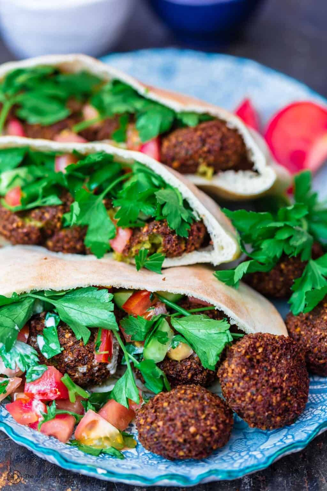

Falafel

Description
Falafel is a popular Middle Eastern “fast food” made of a mixture of chickpeas (or fava beans), fresh herbs, and spices that are formed into a small patties or balls. It’s thought that falafel originated in Egypt as Coptic Christians looked for a hearty replacement for meat during long seasons of fasting or lent. It has also become a popular vegan food in Egypt and throughout the Middle East.
Ingredients
- Dried chickpeas
- Fresh herbs
- Onion
- Garlic
- Kosher salt and pepper
- Spices
- Baking powder
- Sesame seeds
Steps
- Soak chickpeas for 24 hours. Cover them in plenty of water and add baking soda to help soften them as they soak. Drain very well.
- Make mixture. Add chickpeas, fresh herbs (parsley, cilantro, and dill), garlic, onion, and spices to food processor and pulse a little bit at a time until the mixture is finely ground. You’ll know it’s ready when the texture is more like coarse meal.
- Refrigerate. Transfer the falafel mixture into a bowl, cover and refrigerate for at least 1 hour or overnight. The chilled mixture will hold together better, making it easier to form the falafel patties.
- Form patties or balls. Once the falafel mixture has been plenty chilled, stir in baking powder and toasted sesame seeds, then scoop golf-sized balls and form into balls or patties (if you go the patties route, do not flatten them too much, you want them to still be nice and fluffy when they're cooked).
- Fry. Frying is the traditional way to cook falafel and yields the most authentic and best result. Heat the oil on medium-high until it bubbles softly (your oil should be hot enough around 375 degrees F, but not too hot that it causes the falafel to fall apart.)
Carefully drop the falafel in the oil, using a slotted spoon, and fry for 3-5 minutes until medium brown on the outside. Avoid over-crowding the falafel; fry them in batches if necessary.